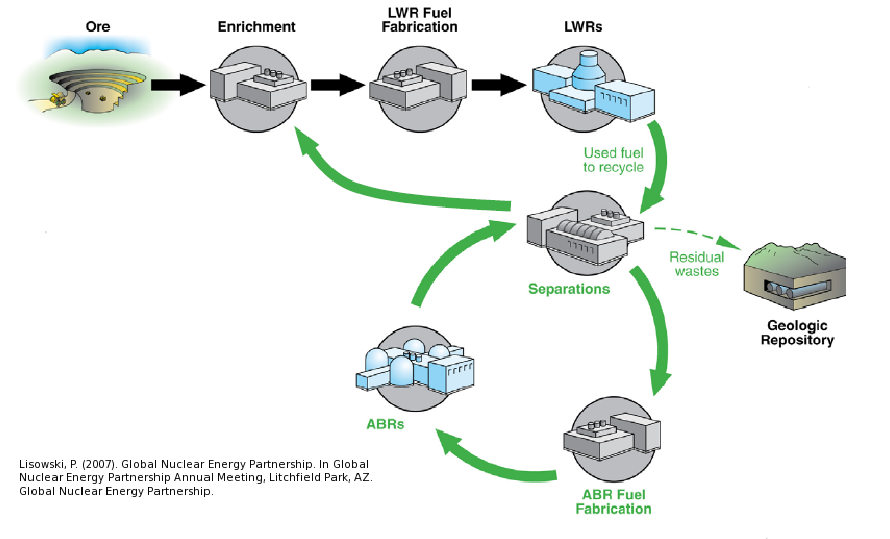
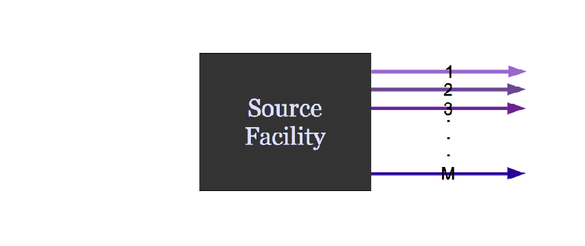
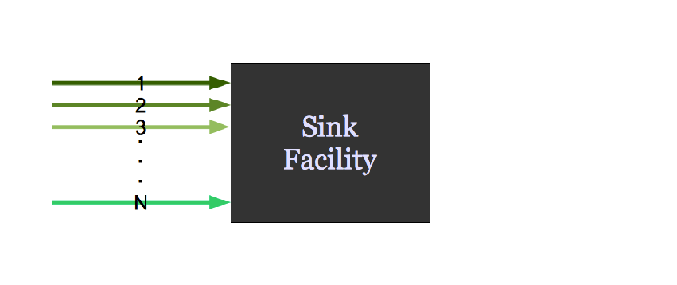
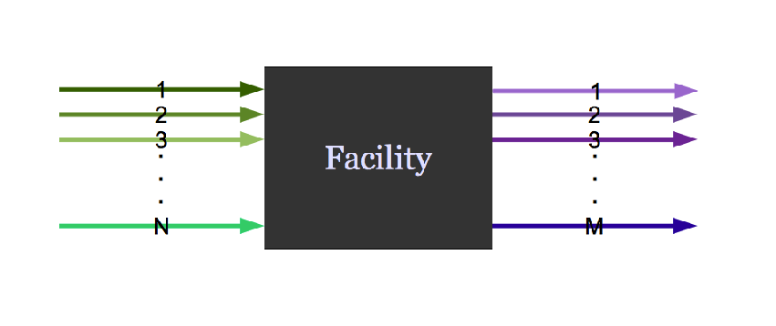
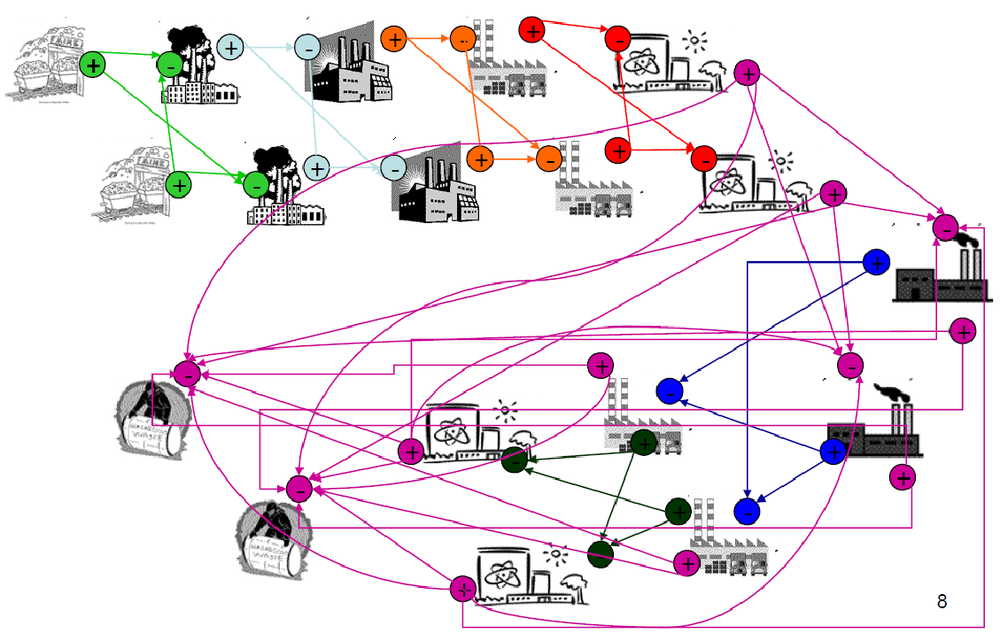
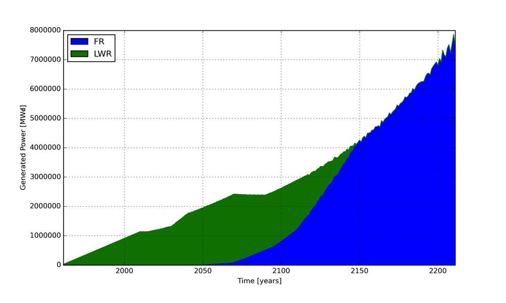
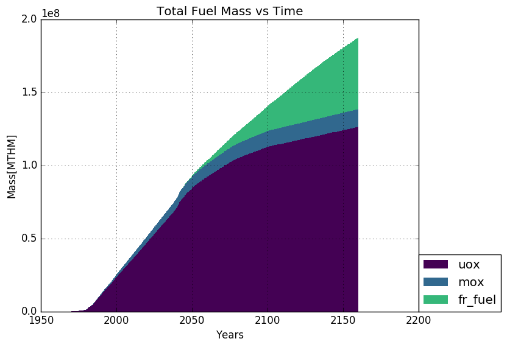
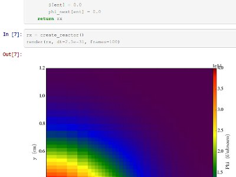

Academia and Open Source
SciPy 2017
Austin, TX
July 12, 2017
Kathryn (Katy) Huff
“... transform lives and serve society by educating, creating knowledge, and putting knowledge to work on a large scale and with excellence. ” - University of Illinois Mission Statement, 2017
“<++>” - Dagstuhl Perspectives Manifesto on Engineering Academic Software
Engineering Academic Software
Manifesto from Dagstuhl Perspectives Workshop 16252
Alice Allen, Cecilia Aragon, Christoph Becker, Jeffrey Carver, Andrei Chis, Benoit Combemale, Mike Croucher, Kevin Crowston, Daniel Garijo, Ashish Gehani, Carole Goble, Robert Haines, Robert Hirschfeld, James Howison, Kathryn Huff, Caroline Jay, Daniel S. Katz, Claude Kirchner, Katie Kuksenok, Ralf Lämmel, Oscar Nierstrasz, Matt Turk, Rob van Nieuwpoort, Matthew Vaughn, and Jurgen J. Vinju
One of the major reasons I dropped out of my PhD was because I didn't believe academia could properly value software contributions
— Wes McKinney (@wesmckinn) June 11, 2016
Citation
- I will make explicit how to cite my software.
- I will cite the software I used to produce my research results.
- When reviewing, I will encourage others to cite the software they have used.
Careers
- I will recognize software contributions in hiring and promotion within my institution, and encourage others in my institution to do the same.
When you have a new idea-
Academia: "I hope no one scoops me"— Elizabeth Seiver (@tweetotaler) July 10, 2017
#opensource: "thank goodness someone already thought of this!"
Development and Use
- I will develop software as open source from the start, whenever possible.
- I will contribute to sustaining software I use and rely on.
- I will match proposed software engineering practices to the actual needs and resources of the project.
- I will help researchers improve the quality of their software without passing judgment.
- I will publish the intellectual contributions of my research software.
- I will document (including usage instructions, and input and output examples), package, release, and archive versions of my software.


“Heavier-than-air flying machines are impossible” - Lord Kelvin, 1895
“ Organized Skepticism. Scientists are critical: All ideas must be tested and are subject to rigorous structured community scrutiny.” - R.K. Merton, 1942
“ The scientific method’s central motivation is the ubiquity of error—the awareness that mistakes and self-delusion can creep in absolutely anywhere and that the scientist’s effort is primarily expended in recognizing and rooting out error. ” - Donoho, 2009.
“the first principle is that you must not fool yourself, and you are the easiest person to fool.” - R. Feynman, 1974
“I am thinking about something much more important than bombs. I am thinking about computers.” - John von Neumann, 1946.
Science
- builds and organizes knowledge
- tests explanations about the universe
- systematically,
- objectively,
- transparently,
- and reproducibly.
Otherwise it's not science.
Science relies on
- peer review,
- skepticism,
- transparency,
- attribution,
- accountability,
- collaboration,
- and impact.
Since 6th century BCE, science has been perfecting these tenents.
Open source software is now superior at all of them.
Computers
should...
- improve efficiency,
- reduce human error,
- automate the mundane,
- simplify the complex,
- and accelerate research.
But scientists aren't trained to use them effectively.
We need you.
“Tell me and I'll forget, show me and I'll remember, involve me and I will understand.” -- Xun Kuang, 3rd Century BC
Energy
A Nuclear Fuel Cycle Simulation Framework
The Nuclear Fuel Cycle
Hundreds of discrete facilities mine, mill, convert, fabricate, transmute, recycle, and store nuclear material.
{kind=link}
Agent Based Systems Analysis
An agent-based simulation is made up of actors and communications between those actors.
Agent Based Systems Analysis
A facility might create material.
{kind=link}
Agent Based Systems Analysis
It might request material.
{kind=link}
Agent Based Systems Analysis
It might do both.
{kind=link}
Agent Based Systems Analysis
Even simple fuel cycles have many independent agents.
{kind=link}
Transition Analysis
Power generated by reactor type.
Material Tracking
Fuel movement by type.
PyNE

THE END
katyhuff.github.io/2017-05-20-pycon
Do It For Science: PyCon 2017 by Kathryn Huff is licensed under a Creative Commons Attribution 4.0 International License.
Based on a work at http://katyhuff.github.io/2017-05-20-pycon.